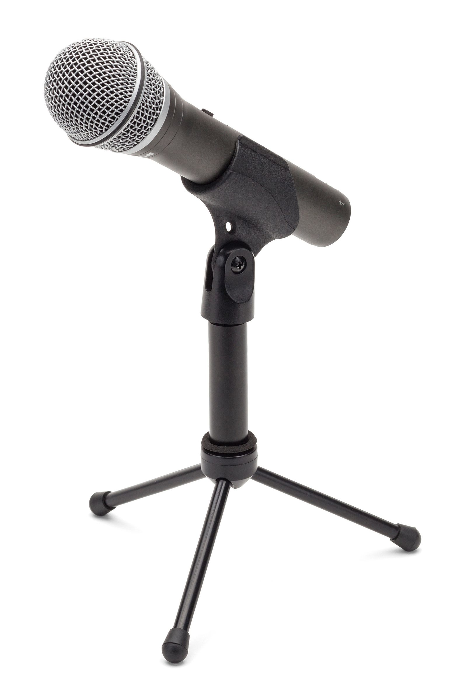
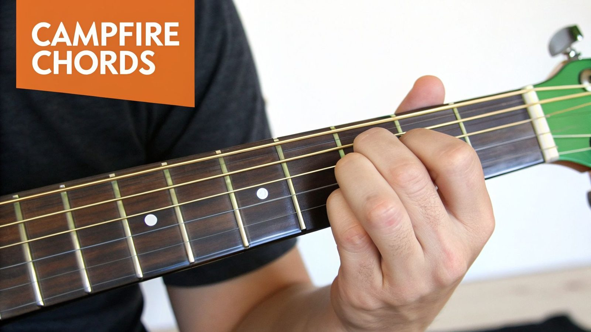
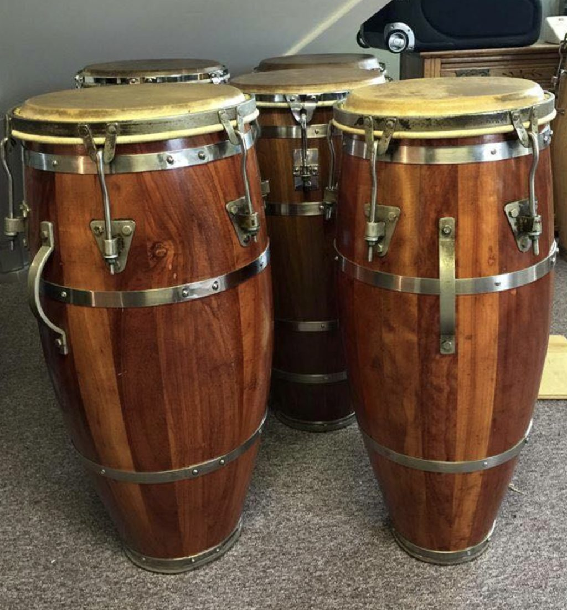

Selo Independente · Produtora Cultural
Um selo dedicado às Brasilidades — à cultura afro-brasileira, aos mestres da tradição popular, aos tambores do norte e ao samba de raiz. Onde a ancestralidade encontra o tempo presente.
O Por do Som nasceu de uma certeza simples: a música brasileira de raiz merece ser ouvida, registrada e celebrada. Somos um selo independente e produtora cultural que se debruça sobre as Brasilidades — esse turbilhão de sons, cores e saberes que pulsa do Maranhão a São Paulo, dos terreiros aos quintais, dos mestres aos jovens que os escutam.
Trabalhamos com cultura afro-brasileira, com samba raiz, com bumba meu boi, com tambores e cantigas. Gravamos, produzimos, curamos. Homenageamos mestres e abrigamos parcerias que atravessam gerações — porque a tradição só é viva quando segue sendo cantada.
Cada lançamento é um ato de resistência cultural. Cada projeto, uma forma de dizer: a música popular brasileira segue inventando, segue ensinando, segue reunindo gente em torno do que é nosso.
— Por do Som Cultural
Da curadoria à masterização, do edital ao palco — estrutura completa para projetos que celebram a música brasileira de raiz.
Concepção, edição e lançamento de álbuns e singles. Da pré-produção à distribuição digital, com curadoria artística que respeita a essência de cada obra e cada artista.
Gravação, arranjo, mixagem e masterização com identidade brasileira. Parceria com o Estúdio 185 Apodi e equipe técnica dedicada à captura orgânica de vozes, violas, tambores e sanfonas.
Realização de festivais culturais, séries audiovisuais e projetos com mestres da cultura popular. Curadoria que reúne tradição e contemporaneidade no mesmo palco.
Compositores, intérpretes e mestres que carregam a brasilidade nas vozes, nas violas e nos tambores. Cada um à sua maneira, todos no mesmo compasso.
Séries audiovisuais, festivais e homenagens que o Por do Som realiza pelo Brasil afora, celebrando mestres, saberes e sonoridades que definem a identidade do país.
Série que percorre os sotaques musicais das regiões brasileiras, revelando sonoridades, vozes e tradições que moldam a música do país. Um mapa sonoro do Brasil.
AssistirFestival que celebra a diversidade e a fraternidade musical brasileira. Já em sua 2ª edição, reúne artistas de várias gerações e regiões em um mesmo palco — show "Caminhos" gravado no Estúdio 185 Apodi.
AssistirFestival que homenageia mestres da cultura popular e seus saberes tradicionais. Perpetua raízes musicais que definem a identidade do Brasil — do bumba meu boi às ladainhas do Divino.
AssistirLançamentos do selo e playlists curadas — um panorama da música brasileira de raiz, do forró folk ao samba paulista, dos tambores ao canto ancestral.



Seleção do selo de samba de raiz e partido alto — o Brasil em compasso de batuque, com mestres e novas vozes do gênero.
Batuques e tambores das várias regiões do país, em curadoria que percorre tradições afro-brasileiras, maracatus, coco e cirandas.
Artistas, instituições, órgãos de fomento e parceiros — o Por do Som está aberto a novas parcerias que celebrem a cultura brasileira de raiz.
Para propor parcerias artísticas, enviar um projeto ou conversar sobre lançamentos, fale com a gente pelo direct do Instagram @pordosomcultural — é o canal mais rápido e direto com nossa equipe.
Para editais, patrocínios e projetos culturais, estamos prontos para captação, produção e execução. Temos histórico com festivais, séries audiovisuais e homenagens a mestres da cultura popular.
Artistas, instituições e órgãos de fomento — estamos prontos para escutar sua proposta. Captação, produção e execução de projetos culturais com a cara do Por do Som: raiz, ancestralidade e cultura brasileira.
Falar no Instagram